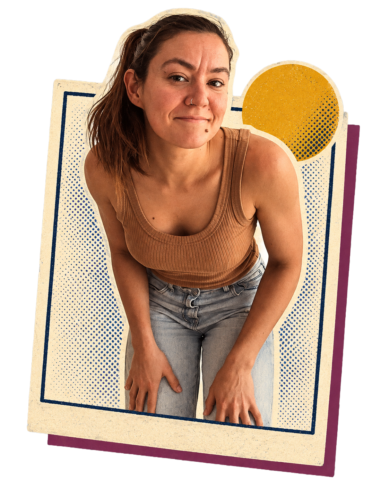
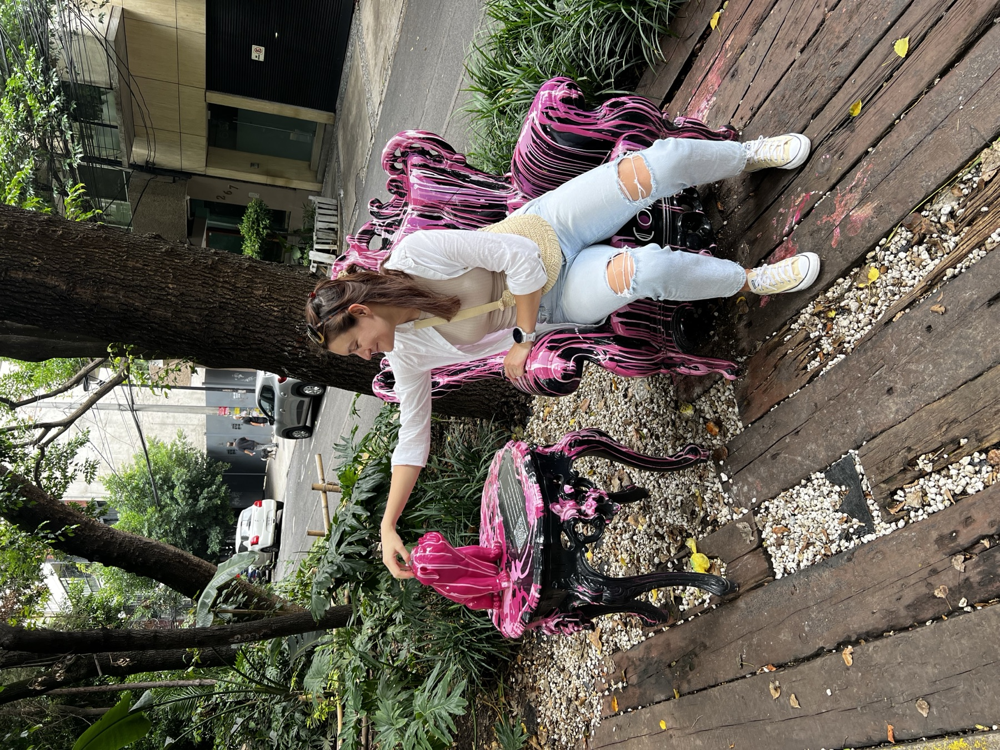

Bring one thing that feels stuck, loud, or hard to name. We will slow down, notice what is happening, and find a small next step you can try in everyday life.
Book a single session →You did
everything
right.
So why does this life not feel like yours?
Somatic coaching for millennial women whose lives look good on paper but feel exhausting or disconnected. We slow down, notice what is happening in your body, and practise making choices that feel like yours.

Somatic coach & Human Design guide.
Choose where
to begin.
For the patterns you want time and support to work with. Six sessions over three months give us room to practise listening to yourself and making changes that fit your real life.
Book 3-month coaching →A focused perspective on your chart and one experiment to try. If you want support working with what comes up, you can bring it into somatic coaching.
Explore Quick Insight →How we work.
We begin with what is happening in your life now. These three lenses help us understand a pattern and practise a different response.
Notice the stories and expectations that shape how you see yourself and what you allow yourself to want.
Pay attention to sensations and stress responses, then find ways to stay present with what matters to you.
Use your chart as a reflective lens when it is useful, never as a label or a set of instructions.
I help you hear
yourself again.
I’m Clara, a somatic coach and Human Design guide. In our sessions, we pay attention to what you feel as well as what you think. I help you notice the patterns that make your own wants hard to hear, then find ways to respond that fit your real life.
The point is to feel more present and at home in your life, not to make it look better from the outside.
Training & credentials
- Human Design: Chart Alchemy, Sort of Spiritual, 2026
- The Human Design Variables, Vaness Henry, 2025
- Somatic Practitioner Certification, The Core Rising® Method, 2025
- Yoga & Somatics for Healing & Recovery (100h), Somatic Therapeutic Yoga, 2024
- Embodied Coaching™ Practitioner, Academia de Coaching Somático, 2024
- PSYCH-K® Basic & Advanced, 2021
- 200-hour Elemental Yoga Teacher Training, Vivid Yoga APT, 2017
The truth bit
I am not here to give you answers.
You are the expert on your life. I can help you notice the stress responses, stories and inherited expectations that make your own voice harder to hear. Then we practise listening without immediately talking yourself out of what you know. But I will never tell you what you should do. Only you know.
More about me...
I am usually happiest walking somewhere green, imagining a future Mediterranean permaculture garden with more goats than is advisable, or making a joke halfway through a serious conversation.
Instagram is where I share more of the lived, unfinished version of the journey that is my life.
